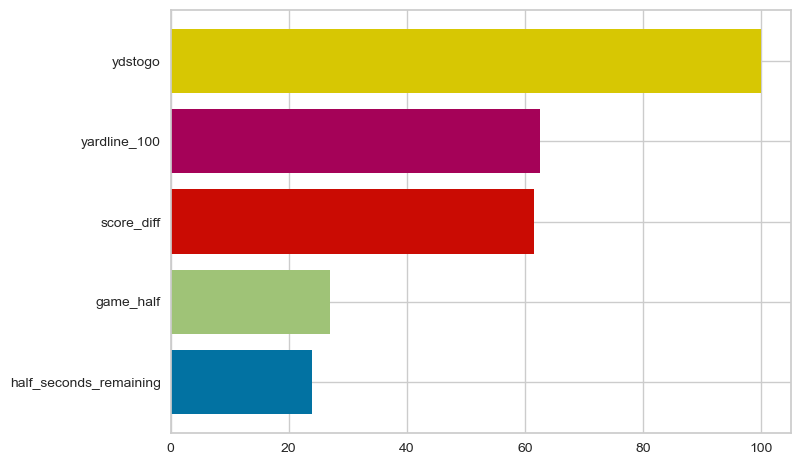
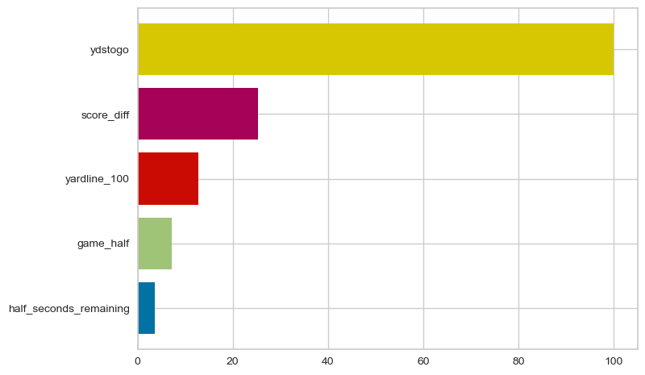
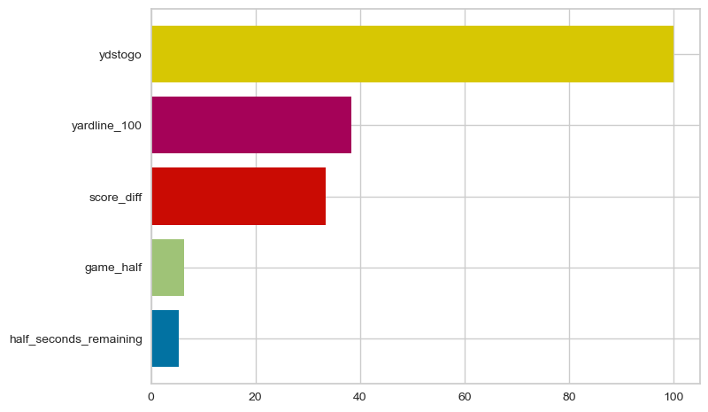

Conclusions
Throughout this project we have looked at a variety of ways to analyze one of the most important decisions in sports: the 4th down conversion. From data visualizations, to classification, to clustering, we have evaluated this singular decision from many angles. However, after studying this process for many months, I have found the most useful way to look at this decision through, fittingly, the deicion tree. It most closely models the actual decision making process coaches go through when on the sideline, and the tools available to us through packages in R and Python allow us to easily build these trees specific to individual coaches and analyze their components to determine exactly how these coaches make their decisions.
The most useful plot I encoutered throughout this project was the feature importance plot. This can be generated directly from a decision tree and, as explained earlier, gives us a way to determine what coaches “care” about when making a decision. This simple plot gives us a powerful and unique look inside a coach’s mind, giving us information that the coach themselves may not even be aware of. Often, given the nature of these high-pressure, fleeting situations, coaches make split-second, gut decisions. They have been making decisions like this all their lives and may not stop and take the time to think through their choices. However, even though this decion happens so quickly, it still does happen in the form of a decision tree, at its most basic level.
Coaches make these decisions by asking questions about their situation. What is the score? How much time is left? Where are we on the field? The answers to these numerous questions inform their eventual, binary decision: will they go for it? The first question they ask is the most important, as the answer to that question determines their next question, and the next question after that. Working our way down that tree of questions, that tree of decisions, gives us valuable information about a coach’s thought process. We can then determine the importance of each variable coaches consider when making these decisions, giving us a way to comapre how they approach the game.
The most valuable insight I gained throughout this project can be displayed in two of these feature importance plots. Below is a plot gained from looking at the decisions made on fourth down by all coaches in the NFL over the past 7 seasons. Out of these five readily available variables, which ones do coaches care about the most?

The results showed that there was a fairly clear hierarchy, and seemed to make sense, at least for someone who has watched a lot of football. All five variables were represented, and all had a decently large importance. Yards to go was clearly the most important. Yardline and score were next most important, being about 60% as important as yards to go. The two time variables were the least important, but still 20% as important as yards to go.
I wanted to compare this plot generated from actual decisions made to a plot generated from the optimal decisions made. Take a hypothetical coach making the “correct” decision every time (at least going for it when doing so would increase your win probability and not going for it when it would not). What would a coach like that care about?

That plot can be seen above. One big difference immediately jumps out, that being the remarkable decrease in importance of all variables other than yards to go. That variable dominates this plot, with the other four varibales all being less than 25% as important. This tells us that when making a fourth down decion, the optimal coach makes it almost entirely based on how many yards they need to gain to get the first down. Maybe your team is winning by a lot then it is not worth the risk, hence the importance of the score. But the overwhelming importance of yards to go when compared to the other variables shows us that these decisions may be simpler than we think.
For all the discussion around these decisions, the fact that only one variable seems to be significantly important is very interesting. These seemingly complicated decions could possibly be simplified by asking only one question: how many yards do I need to gain to pick up a first down? Looking at the charts generated from the decisions of some of the best coaches on fourth down in the league, we can see a similar pattern emerge.

This plot was generated using fourth down decisions made by Kevin Stefanski, the coach of the Cleveland Browns and one of the best coaches on fourth down over the past few years. His plot looks remarkably similar to the optimal plot, with yards to go clearly his most important variable (though interestingly yardline and score were flipped and had each had more importance for Stefanski). We discussed the difference between young and old coaches further in the decision trees section, but that trend continued to the extreme there with the time variables not even appearing on Brandon Staley’s and Nick Sirianni’s charts, two young NFL coaches. This may mean the league is catching on to the simplicity of this decision, and younger coaches who are more receptive to change are simplifying it already. Regardless, the importance of yards to go and relative unimportance of the other four variables was the most important conclusion I reached in this project and something that I find fascinating. We may be able to simplify one of the most important and polarizing decisions in all of sports to looking at just a few factors, or maybe even just one.
Future Steps
As with any good project however, at the end I am almost left with more questions than answers. The natrual next step to this analysis is to fully understand the effect making good decisions on fourth downs has on games. This was briefly touched on in the Naïve Bayes section, but fourth down decisions are a relatively small part of football. It is only 1 of 4 downs after all, so it is possible that there really is not much advatage to be gained. I do think that these plays are some of the most important plays in a game, however, so their effect on the overall result is worth studying.
Finally, I would also like to continue by looking at how accurate we can make our fourth down decisions. These decision trees are fairly simple models and as mentioned earlier in our high-leverage scenario analysis, some fourh down decisions are easier to predict than others. I think this project naturally lends itself into using more advanced models to make these descisions, such as artifical neural networks. We are modeling the decision process of real coaches after all.
Finally, I would like to determine what the correct play call to make on fourth down would be. Despite all this analysis, determining whether or not to go for it on fourth down is only the first step. After deciding to go for it, a coach must determine what play they want to call, a much more daunting task. While this would be an incredibly difficult pursuit, is is nevertheless a worthwhile one.
These three possible extensions are just a few examples of how this could be taken further. The appeal of sports, and the NFL in particular, is there is seemingly no end to how deep down the rabbit hole one can go. When we inevitably determine the precisely correct decision to make on fourth down, opposing coaches will then know what is coming. The correct decisions become incorrect decisions, and our analysis must repeat itself yet again. Some may see this endless cycle as a futile one, but others relish this challenge and are excited by the new possibilities that are opening up as a result of the constant innovation within the game. Regardless, many more fourth down decisions are yet to be made, and I am incredibly excited to see how this deep and complex game conintues to evolve.